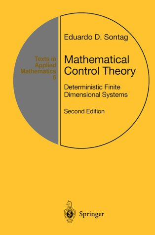

Mathematical Control Theory

Now online
version available (click on link for pdf file, 544 pages)
(Please note: book is copyrighted by Springer-Verlag. Springer has kindly
allowed me to place a copy on the web, as a reference and for ease of
web searches. Please consider buying your own hardcopy.)
 Precise reference:
Precise reference:
Eduardo D. Sontag, Mathematical Control Theory:
Deterministic Finite Dimensional Systems.
Second Edition, Springer,
New York, 1998.
(531+xvi pages, ISBN 0-387-984895)
Series: Textbooks in Applied Mathematics, Number 6. Hardcover, approx
$55.00
Order in USA from 1-800-SPRINGER
or from
amazon.com.
Errata for 2nd edition
First Edition's
web
page.
(Errata, revisions, and some comments, all regarding the first edition,
are included there. No errata posted since mid 1997.)
Math Reviews
Publicity Blurb:
This textbook introduces the core concepts and results of Control and
System Theory. Unique in its emphasis on foundational aspects, it takes
a "hybrid" approach in which basic results are derived for discrete and
continuous time scales, and discrete and continuous state variables. Primarily
geared towards mathematically advanced undergraduate or graduate students,
it may also be suitable for a second engineering course in control which
goes beyond the classical frequency domain and state-space material. The
choice of topics, together with detailed end-of-chapter links to the bibliography,
makes it an excellent research reference as well.
The Second Edition constitutes a substantial revision and extension
of the First Edition, mainly adding or expanding upon advanced material,
including: Lie-algebraic accessibility theory, feedback linearization,
controllability of neural networks, reachability under input constraints,
topics in nonlinear feedback design (such as backstepping, damping, control-Lyapunov
functions, and topological obstructions to stabilization), and introductions
to the calculus of variations, the maximum principle, numerical optimal
control, and linear time-optimal control.
Also covered, as in the First Edition, are notions of systems and automata
theory, and the algebraic theory of linear systems, including controllability,
observability, feedback equivalence, and minimality; stability via Lyapunov,
as well as input/output methods; linear-quadratic optimal control; observers
and dynamic feedback; Kalman filtering via deterministic optimal observation;
parametrization of stabilizing controllers, and facts about frequency domain
such as the Nyquist criterion.
From the reviews of the first edition:
"This book will be very useful for mathematics and
engineering students interested in a modern and rigorous systems course,
as well as for experts in control theory and applications"
Mathematical Reviews
"An excellent book... gives a thorough and mathematically
rigorous treatment of control and system theory"
Zentralblatt fur Mathematik
"The style is mathematically precise... fills an important
niche... serves as an excellent bridge (to topics treated in traditional
engineering courses). The book succeeds in conveying the important basic
ideas of mathematical control theory, with appropriate level and style"
IEEE Transactions on Automatic Control

Chapter and Section Headings:
Introduction
What Is Mathematical
Control Theory?
Proportional-Derivative
Control
Digital Control
Feedback Versus
Precomputed Control
State-Space
and Spectrum Assignment
Outputs and
Dynamic Feedback
Dealing with
Nonlinearity
A Brief Historical
Background
Some Topics
Not Covered Systems
Basic
Definitions
I/O Behaviors
Discrete-Time
Linear Discrete-Time
Systems
Smooth Discrete-Time
Systems
Continuous-Time
Linear Continuous-Time
Systems
Linearizations
Compute Differentials
More on Differentiability
Sampling
Volterra Expansions
Notes and Comments
Reachability
and Controllability
Basic Reachability
Notions
Time-Invariant
Systems
Controllable
Pairs of Matrices
Controllability
Under Sampling
More on Linear
Controllability
Bounded Controls
First-Order
Local Controllability
Controllability
of Recurrent Nets
Piecewise Constant
Controls
Notes and Comments
Nonlinear
Controllability
Lie Brackets
Lie Algebras
and Flows
Accessibility
Rank Condition
Ad, Distributions,
and Frobenius' Theorem
Necessity of
Accessibility Rank Condition
Additional
Problems
Notes and Comments
Feedback
and Stabilization
Constant Linear
Feedback
Feedback Equivalence
Feedback Linearization
Disturbance
Rejection and Invariance
Stability and
Other Asymptotic Notions
Unstable and
Stable Modes
Lyapunov and
Control-Lyapunov Functions
Linearization
Principle for Stability
Introduction
to Nonlinear Stabilization
Notes and Comments
Outputs
Basic Observability
Notions
Time-Invariant
Systems
Continuous-Time
Linear Systems
Linearization
Principle for Observability
Realization
Theory for Linear Systems
Recursion and
Partial Realization
Rationality
and Realizability
Abstract Realization
Theory
Notes and Comments
Observers
and Dynamic Feedback
Observers and
Detectability
Dynamic Feedback
External Stability
for Linear Systems
Frequency-Domain
Considerations
Parametrization
of Stabilizers
Notes and Comments
Optimality:
Value Function
Dynamic Programming
Linear Systems
with Quadratic Cost
Tracking and
Kalman Filtering
Infinite-Time
(Steady-State) Problem
Nonlinear Stabilizing
Optimal Controls
Notes and Comments
Optimality:
Multipliers
Review of Smooth
Dependence
Unconstrained
Controls
Excursion into
the Calculus of Variations
Gradient-Based
Numerical Methods
Constrained
Controls: Minimum Principle
Notes and Comments
Optimality:
Minimum-Time for Linear Systems
Existence Results
Maximum Principle
for Time-Optimality
Applications
of the Maximum Principle
Remarks on
the Maximum Principle
Additional
Exercises
Notes and Comments
Appendix: Linear
Algebra
Operator Norms
Singular Values
Jordan Forms
and Matrix Functions
Continuity
of Eigenvalues
Appendix: Differentials
Finite Dimensional
Mappings
Maps Between
Normed Spaces
Appendix: Ordinary
Differential Equations
Review of Lebesgue
Measure Theory
Initial-Value
Problems
Existence and
Uniqueness Theorem Linear Differential Equations
Stability of
Linear Equations
Bibliography
List
of Symbols
Index
 Back to Eduardo Sontag's Public
Homepage.
Back to Eduardo Sontag's Public
Homepage.